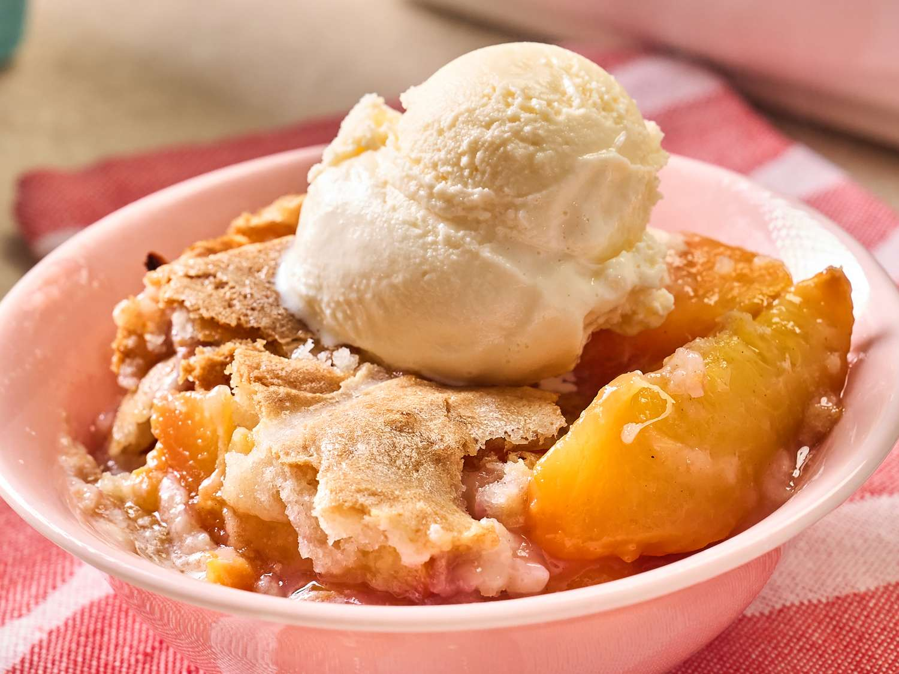

This fresh peach cobbler has a hot sugar crust, and while you may resist the idea of pouring boiling water over a lot of sugar on top of your beautiful cobbler dough, don’t be nervous. It makes a delightful, crackly crust over the tender dough, a perfect complement to fresh, juicy peaches.
15 min
1 hr 5 min
10 min
1 hr 30 min
10 to 12
Preheat the oven to 350 degrees F (180 degrees C). Place peaches in a 9x13-inch baking dish; set the baking dish on a rimmed baking sheet.
Step 2Add lemon zest, lemon juice, cornstarch, 1 1/2 tablespoons sugar, and cinnamon to peaches, and toss until well combined.
Step 3Combine butter and 1 1/3 cups sugar in a bowl and beat on medium speed with an electric mixer until well combined. Add flour, baking powder, and salt and continue mixing until well blended. Add milk and mix until just combined.
Step 4Spoon mixture over peaches; spread evenly into a thin layer.
Step 5Sprinkle the top evenly with remaining sugar. Pour boiling water evenly over the sugar layer.
Step 6Bake in the preheated oven until browned and bubbly and the batter layer has just set, 65 to 75 minutes. Let stand for 10 minutes before serving.
Home